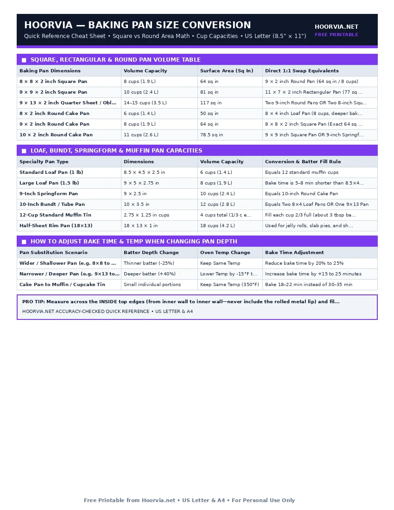

Baking Pan Size & Volume Conversion Chart
Swapping an 8-inch square pan for a 9-inch square pan increases surface area by 27%, making brownies thinner and causing them to overbake 6 minutes early. Match the total volume (in cups) and keep batter depth between 1.25 and 1.75 inches.
| Baking Pan Dimensions | Volume Capacity | Surface Area (Sq In) | Direct 1:1 Swap Equivalents |
|---|---|---|---|
| 8 × 8 × 2 inch Square Pan | 8 cups (1.9 L) | 64 sq in | 9 × 2 inch Round Pan (64 sq in / 8 cups) |
| 9 × 9 × 2 inch Square Pan | 10 cups (2.4 L) | 81 sq in | 11 × 7 × 2 inch Rectangular Pan (77 sq in / 10 cups) |
| 9 × 13 × 2 inch Quarter Sheet / Oblong | 14–15 cups (3.5 L) | 117 sq in | Two 9-inch Round Pans OR Two 8-inch Square Pans |
| 8 × 2 inch Round Cake Pan | 6 cups (1.4 L) | 50 sq in | 8 × 4 inch Loaf Pan (8 cups, deeper bake) |
| 9 × 2 inch Round Cake Pan | 8 cups (1.9 L) | 64 sq in | 8 × 8 × 2 inch Square Pan (Exact 64 sq in match!) |
| 10 × 2 inch Round Cake Pan | 11 cups (2.6 L) | 78.5 sq in | 9 × 9 inch Square Pan OR 9-inch Springform Pan |
| Specialty Pan Type | Dimensions | Volume Capacity | Conversion & Batter Fill Rule |
|---|---|---|---|
| Standard Loaf Pan (1 lb) | 8.5 × 4.5 × 2.5 in | 6 cups (1.4 L) | Equals 12 standard muffin cups |
| Large Loaf Pan (1.5 lb) | 9 × 5 × 2.75 in | 8 cups (1.9 L) | Bake time is 5–8 min shorter than 8.5×4.5 pan |
| 9-Inch Springform Pan | 9 × 2.5 in | 10 cups (2.4 L) | Equals 10-inch Round Cake Pan |
| 10-Inch Bundt / Tube Pan | 10 × 3.5 in | 12 cups (2.8 L) | Equals Two 8×4 Loaf Pans OR One 9×13 Pan |
| 12-Cup Standard Muffin Tin | 2.75 × 1.25 in cups | 4 cups total (1/3 c each) | Fill each cup 2/3 full (about 3 tbsp batter) |
| Half-Sheet Rim Pan (18×13) | 18 × 13 × 1 in | 18 cups (4.2 L) | Used for jelly rolls, slab pies, and sheet cookies |
| Pan Substitution Scenario | Batter Depth Change | Oven Temp Change | Bake Time Adjustment |
|---|---|---|---|
| Wider / Shallower Pan (e.g. 8×8 to 9×9) | Thinner batter (-25%) | Keep Same Temp | Reduce bake time by 20% to 25% |
| Narrower / Deeper Pan (e.g. 9×13 to Two 8×4 Loaves) | Deeper batter (+40%) | Lower Temp by -15°F to -25°F | Increase bake time by +15 to 25 minutes |
| Cake Pan to Muffin / Cupcake Tin | Small individual portions | Keep Same Temp (350°F) | Bake 18–22 min instead of 30–35 min |
Printable Cheat Sheet Preview (US Letter & A4)
High-contrast, ink-saving layout designed for kitchen binders and refrigerator magnets. No sign-up required.

Surface Area Math: The 64 Square-Inch Golden Swap
An 8-inch square pan (64 sq in) and a 9-inch round pan (63.6 sq in) have virtually identical surface areas and hold 8 cups. You can swap them 1-for-1 in any brownie, cornbread, or cake recipe without changing oven temperature or baking time!
Frequently Asked Questions
Can I bake a 9x13 cake recipe in two 9-inch round pans?
Yes! Divide the batter evenly between the two round pans and reduce baking time by 5 to 8 minutes.
What happens if I bake an 8.5x4.5 banana bread recipe in a 9x5 loaf pan?
A 9x5 pan is 25% larger in volume. Your loaf will sit slightly flatter and finish baking 5 to 7 minutes earlier.
Complete Baking & Pastry Reference Cluster (10 Free Sheets)
- 📄 Baking Ingredient Substitutions Cheat Sheet (#011)
- 📄 Baking Temperature Chart & Oven Heat Zones (#012)
- 📄 Cake Pan Batter, Yield & Tier Serving Chart (#014)
- 📄 Cookie Baking Time, Temp & Scoop Size Chart (#015)
- 📄 Bread Internal Temperature & Doneness Guide (#016)
- 📄 Yeast Conversion Chart (Instant, Active & Fresh) (#017)
- 📄 Flour Weight & Protein Conversion Chart (#018)
- 📄 Sugar & Liquid Sweetener Conversion Chart (#019)
- 📄 Baking Troubleshooting Diagnostic Chart (#020)
Frequently Asked Questions (FAQs)
Can I bake a 9x13 cake recipe in two 9-inch round pans?▼
Yes! Divide the batter evenly between the two round pans and reduce baking time by 5 to 8 minutes.
What happens if I bake an 8.5x4.5 banana bread recipe in a 9x5 loaf pan?▼
A 9x5 pan is 25% larger in volume. Your loaf will sit slightly flatter and finish baking 5 to 7 minutes earlier.